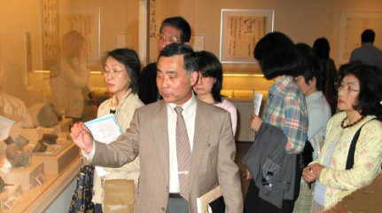

|  |
企画展示は撮影禁止のため、
「見学の風景」の写真だけでご勘弁下さい。 |
古文書講義につづいての 「さいかちの会」
活動の第二弾、「古代日本 文字のある風景」
のフロア・レクチャーが４月２７日に行なわれた。会員の皆さんが集まりやすいように日曜日の午前中、ということで博物館の前沢学芸課長にお願いしたが、当日の朝まで大勢の人に集まって頂けるか、心配だった。
第二期活動終了の日にも、古文書の日にも参加を呼びかけたが、それでも不安だったというのは、私がよっぽど心配性なのだろうか。
当日は快晴、幸先はよさそうだ。 それでも心配で１時間も前に博物館に行くと、センター北駅でＭさんと一緒になる。 これで２人、博物館でＮさんが先着、これで３人、
願望の１５人まであと１２人。ソワソワしている自分を抑えるため、３０分前に図書室に逃げ込む。この時点で８人、望みがありそうな予感がしてきた。
定刻１０時３０分、前沢課長を迎えに行く。一緒に１階ロビーに降りて行くと、なんと予想外の多人数が集まっている。課長の挨拶の間に数えると、なんと２３人、会員の半数近くの人が来ているではないか、思わず胸が熱くなる。
会員の熱気を反映してか、前沢課長の説明にも熱がこもる。噛んでふくめるような説明に加えて、「このことが判ったのは、ここ１０年のことです」
など、研究の最前線の話題が紹介される。昨年春、この展示を佐倉の歴博で一度見た私も、改めて説明を聞くと、勉強になったことが多々あった。
一般の入場者も３人ほど、我々の跡を追い、説明にうなづいていた。予定の１時間をはるかにオーバーした１時間半、質問も多く出て、第１回のフロア・レクチャーは、大成功裏に終った。
終了後の食事会でも、「ただ見ただけではあそこまでは理解できない」、「文字の展覧会など地味な催しだと思っていたが、奥が深いことが分った」
などの感想が口々に述べられた。その時のビールは、本当に美味かった。
|